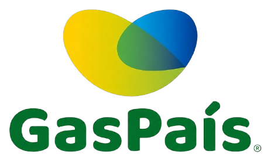

Campuslands Full Service · Software House
Cotización de Alcance · HSE-SST
Plataforma Integral de Gestión
HSE-SST
Permisos de Trabajo · Seguridad Vial · Capacitaciones · Gestión de Incidentes · Contratistas
PARA

Plataforma HSE/SST con ambiente productivo desde el inicio, 8 módulos y capacidad para 1.500 usuarios